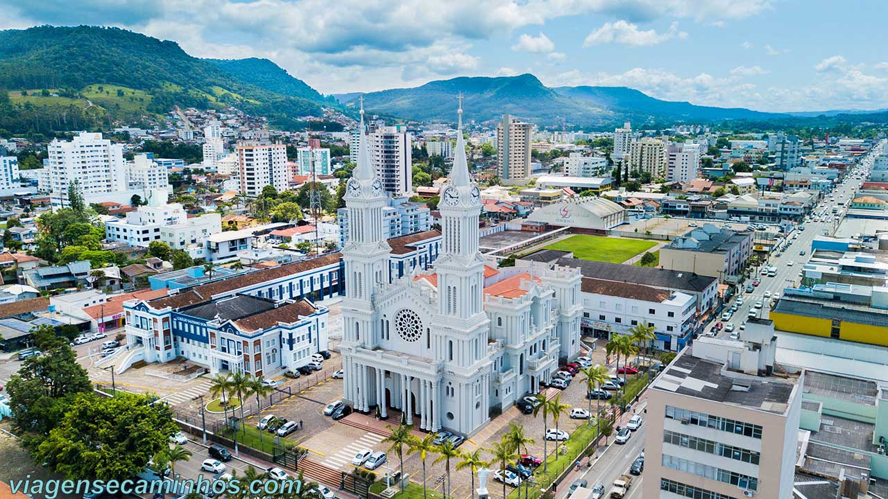
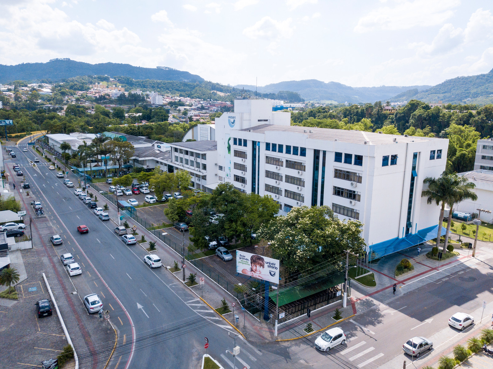
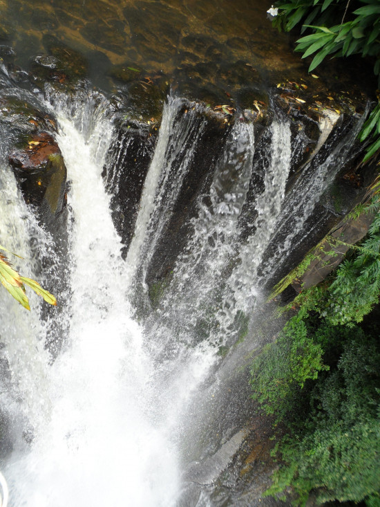
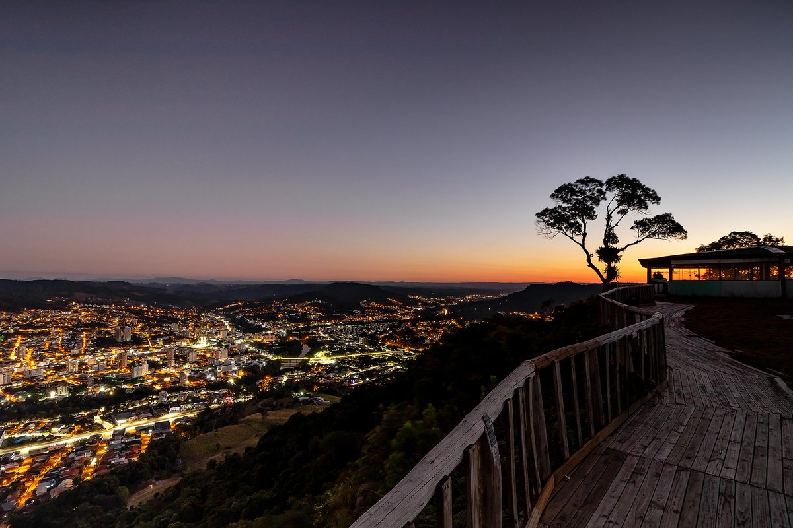
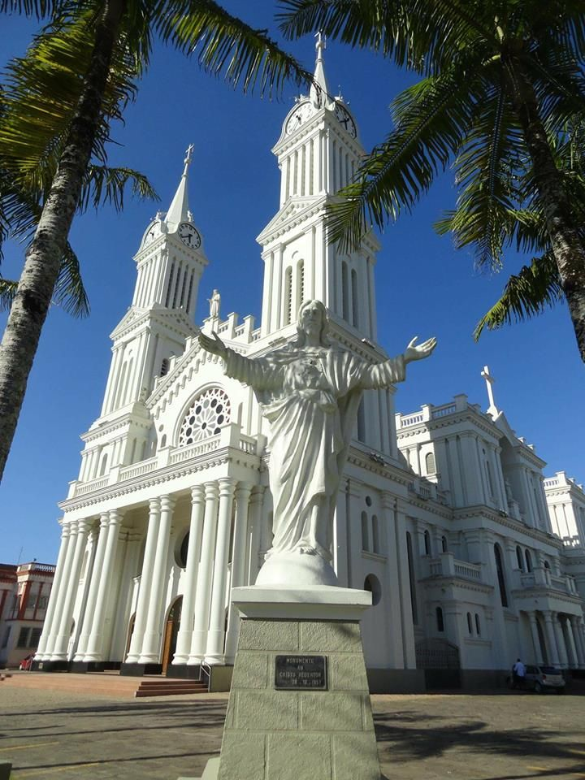

Bem-vindo a Rio do Sul
 Universidade para o Desenvolvimento do Alto Vale do Itajai - UNIDAVI
Turismo
Cachoeira da Magia
A Cachoeira da Magia é uma das mais belas do município. Local propício para banhos, sua queda d’água é de 35 metros de altura. No local os visitantes podem praticar atividades como rappel, tirolesa, pêndulo, trilhas, campismo, piscina natural e restaurante.
Praça da Fé
O Mirante do Javali fica na Estrada do Redentor nº 4700, no Bairro Serra Canoas na Cidade de Rio do Sul/SC. Está dentro de uma propriedade privada, o valor de entrada é de R$ 10,00 por pessoa e está aberto para visitação todos os dias das 09:00 às 18:00 (exceto em dias de chuva)..
Catedral São João batista
Após a inauguração da pedra fundamental, em 1949, a Catedral São João Batista começou a ser construída em 1950. A construção neogótica, de localização elevada e privilegiada no centro da cidade, foi concluída em 1957 e forma um conjunto harmonioso com o Colégio Dom Bosco, Praça Ermembergo Pellizzetti e o monumento do Cristo. Em seu interior, a Catedral ostenta técnicas construtivas expressivas e singulares, mão-de-obra apurada, nichos que contêm imagens sacras numa proporção estudada e perfeita. Abóbadas, colunas, altar principal imponente decorado em mármore, pinturas nas paredes e teto com variadas luminárias.
Nos vitrais da Catedral, de riquíssimo valor, pode-se encontrar os nomes de famílias benfeitoras, da região. A construção, um dos cartões postais de Rio do Sul, símbolo do Alto Vale, é fruto do trabalho do arquiteto Simão Gramlich e do engenheiro Gino Alberto de Lotto e foi erguida no lugar da antiga Igreja Matriz.